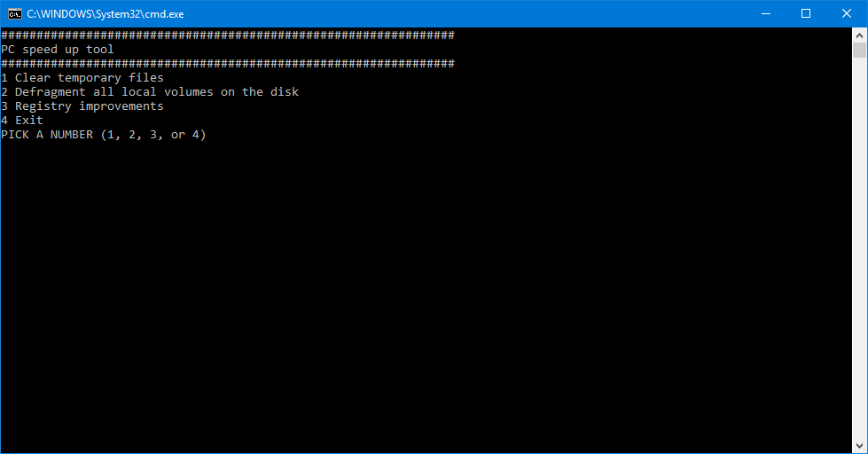

This script is for your old PC which you want to speed up a little so it runs faster.
It deletes temporary files and defragments all local volumes on your PC.
It also improves the visual settings of your device and changes some small things in the registry
Download not yet available
